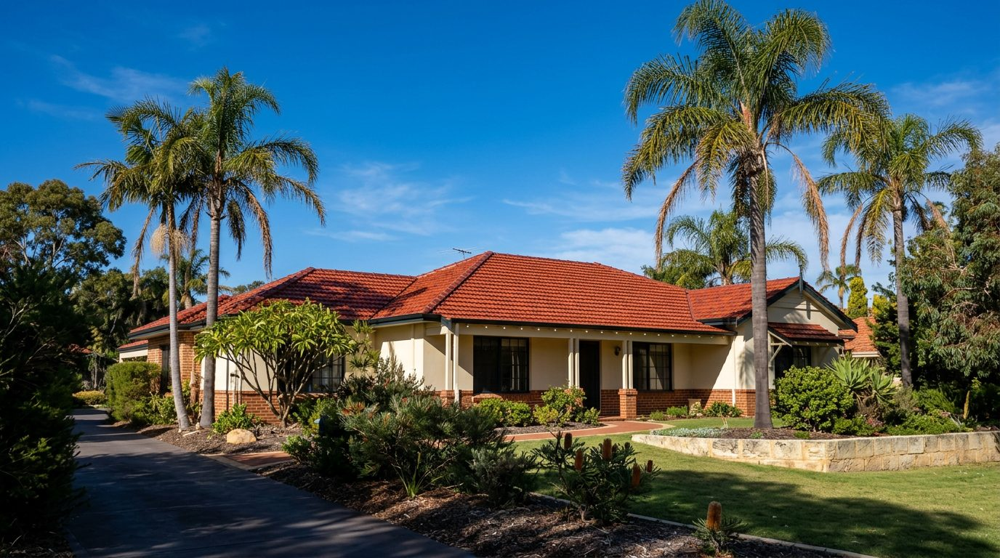
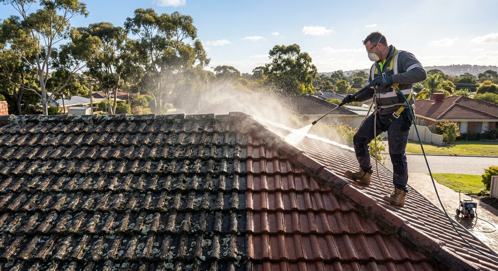
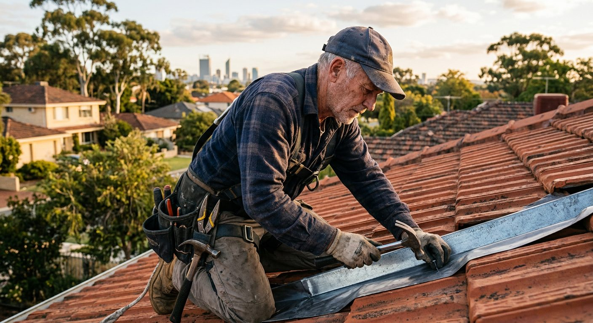

30+ years in WA building
Decades in the WA building industry, not a few seasons on the tools.
Joondalup · Perth's northern suburbs
30+ years in WA building. Roof restorations, leak repairs and painting across Joondalup and Perth's northern suburbs, for homes and commercial properties.
Open 24 hours · online estimates and on-site services

Roof care, made clear
Eight services, residential and commercial, from a full restoration to a single cracked tile. Pick one to see how the job is done.
Why homeowners call Ian
Reviewers keep coming back to the same thing: long-standing leaks that other companies couldn't find, finally traced and fixed.
Decades in the WA building industry, not a few seasons on the tools.
22 Google reviews, all of them 5 stars, with about 103 photos of the work.
Reviewers name Ian on every job, and Ian replies to them himself.
Online estimates any time, and on-site services when the roof can't wait.

How a restoration runs
Every job starts with understanding the roof, not guesswork. A typical restoration moves through four stages.
Send photos for an online estimate, or book an on-site look.
High-pressure cleaning lifts lichen, moss and grime.
Re-pointing, cracked tiles, valleys and leaks sorted.
Roof painting seals and refreshes the finish.
5.0 from 22 Google reviews
Local roof care
From Hillarys to Clarkson, Ian focuses on Joondalup and Perth's northern suburbs.
All service areasService area
Not sure what you need?
What it is
Signs you need it
How the job is done
The exact scope depends on your roof; Ian talks it through with you before any work starts.
Often done together
“Fixed all our long standing leaks that other companies couldn't find.”
Why leaks get missed
Water can enter at a cracked tile, a blocked valley or a gap in ridge-capping mortar, then run along battens and sarking before it shows up as a stain metres away. Patch the stain and the leak comes back.
Ian works from the stain back up the roof, checking every likely entry point until the real one is found.
Where leaks usually start
Each one links to the repair that fixes it.
Where two roof slopes meet and water concentrates.
Cracked tiles and failed pointing on the cappings.
Blocked or rusted gutters backing water under the roof line.
Vents, whirlybirds and flashings that have lifted or perished.
The process
Where the stain or drip shows, and when: heavy rain, wind, or every shower.
Inside and up on the roof, tracing the water's likely path.
Tiles, valleys, ridges, gutters and flashings checked until the cause is clear.
Repair the cause, not just the symptom, and explain what was done.

The story
Ian has spent over 30 years in the WA building industry. Today he restores, repairs and paints roofs for homes and commercial properties from his base on Sail Terrace in Heathridge, with a focus on Joondalup and the northern suburbs.
That experience shows in the work reviewers describe: long-standing leaks traced when others gave up, roof cappings re-pointed across large jobs, and tiles cut and replaced to fit.
The business is open 24 hours, offering online estimates and on-site services.
How Ian works
A leak isn't fixed until its source is.
You'll know what's wrong with your roof and why.
Every capping, every cracked tile, not just the easy ones.
Open 24 hours, by phone or WhatsApp.
The record
Licence and ABN details to be confirmed with the owner before launch.
From 22 reviews, every one of them 5 stars.
Of roofs and work on the public listing.
Residential and commercial work.
Suburbs we cover
Not on the list? If you're in Perth's northern suburbs, send a message and ask.
Home base
Quoted verbatim from Google. Reviewer names as shown on the listing.
Still unsure?
Open 24 hours. Send photos on WhatsApp for an online estimate.
WhatsApp IanWhatsApp should have opened with your details filled in. Press send there and Ian will be in touch. If it didn't open, call 0413 430 233.